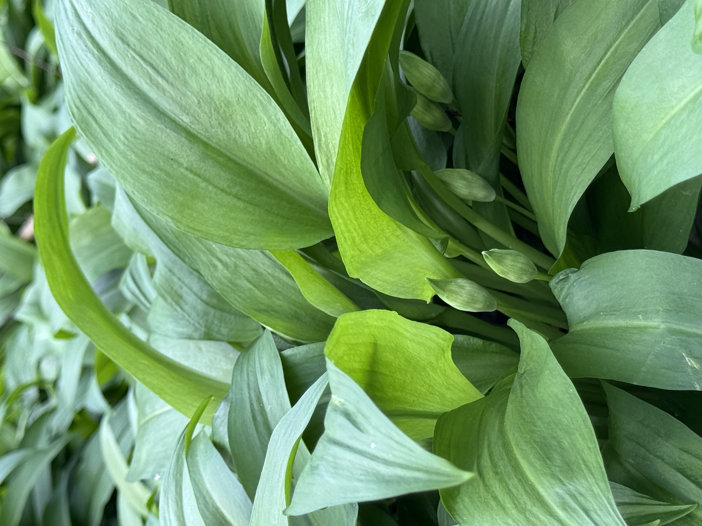
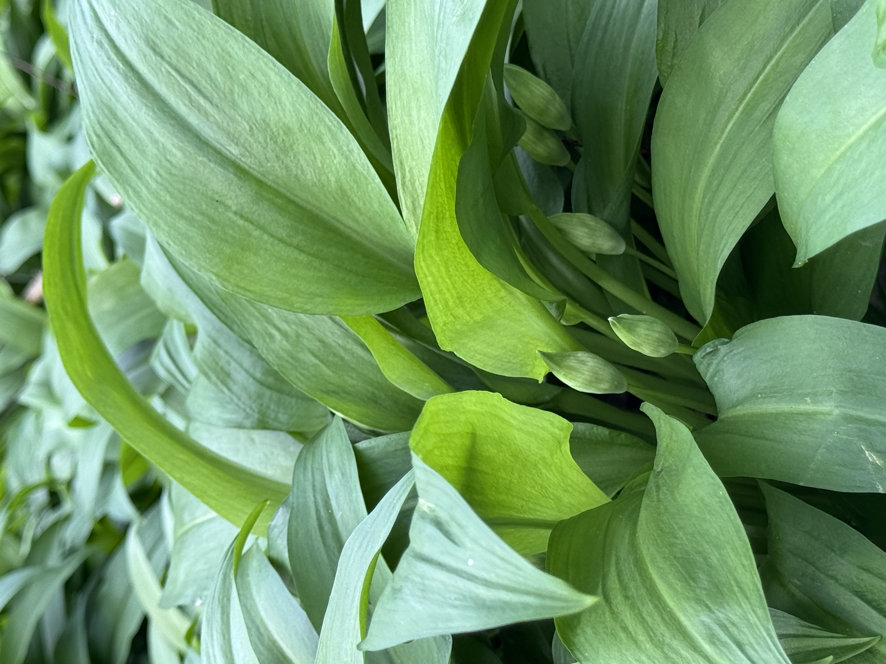

Tartine & Chocolat
Tartine & Chocolat
Tartine & Chocolat
Tartine & Chocolat
 


à la rencontre entre tradition et renouveau
L'ingrédient Secret : L'Ail des Ours de Maurienne Notre histoire commence là où la nature est la plus pure : au cœur de la Vallée de la Maurienne, chaque printemps.

C'est ici que réside le secret de l'intensité et de la fraîcheur incomparables de nos pestos : l'Ail des Ours sauvage.
Une Cueillette Respectueuse : Loin des cultures industrielles, nous partons à la main, feuille après feuille, pour ne sélectionner que les pousses les plus tendres et les plus parfumées. C'est un travail de patience et de passion, garantissant que chaque pot de pesto est imprégné du meilleur de la nature.
Le Goût de l'Authentique : Cet ail sauvage, au goût subtil et puissant à la fois, compose la base unique et incontournable de tous nos pestos. Il confère à nos recettes ce caractère inimitable qui fait toute la différence.
👨🍳 De la Récolte au Pesto : Le Vrai Fait Maison Votre pesto n'est pas simplement *fabriqué* ; il est *élaboré*.
Une fois l'ail des ours ramené de la Maurienne, il rejoint d'autres ingrédients de qualité rigoureusement sélectionnés, et tout le processus se fait dans notre atelier, **100% fait maison**.
Des Recettes Simples et Pures : Nous privilégions le goût. Pas d'artifices, pas de conservateurs, pas de colorants. Juste la fraîcheur de l'ail des ours, des noix et huiles de première qualité, et notre savoir-faire artisanal.
La Fraîcheur Préservée : C'est cette méthode artisanale qui assure une saveur maximale et une texture parfaite, fidèle à la tradition du pesto.
✨ En choisissant nos pestos, vous choisissez plus qu'un condiment : vous adoptez un morceau de nature sauvage, une tradition de cueillette manuelle et l'engagement du vrai fait maison.
**Découvrez la puissance du sauvage, la pureté du fait maison.**